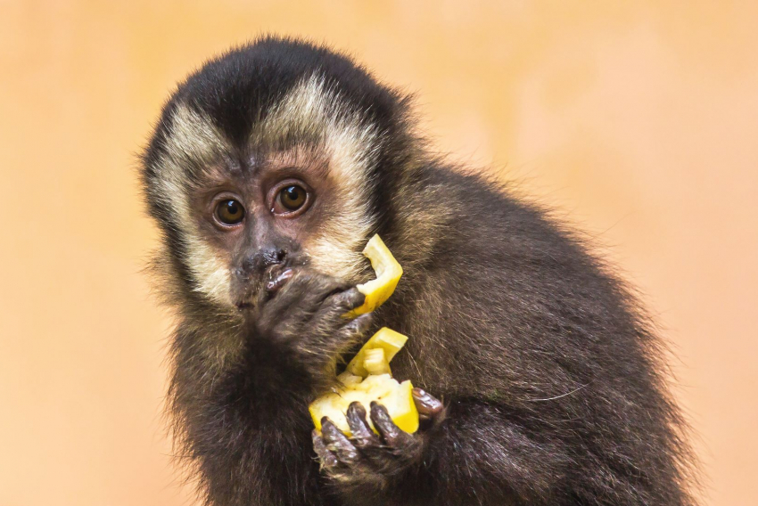

Introduction Capuchin monkeys are members of the subfamily Cebinae. They are widely recognized as the most intelligent New World monkeys. These small, agile primates are famous not only for their distinctive "caps" of dark fur—which reminded early explorers of the hoods worn by Capuchin friars—but also for their remarkable cognitive abilities and complex social structures.
Intelligence and Tool Use One of the most extraordinary traits of the Capuchin is their ability to use tools. In the wild, they have been observed using heavy stones as hammers and flatter rocks as anvils to crack open hard-shelled nuts. This level of sophisticated problem-solving is rare in the animal kingdom and puts them in an elite group of primates, alongside chimpanzees, that demonstrate high-level manual dexterity and planning.
Social Life and Behavior Capuchins are highly social animals that live in groups of 10 to 40 members. These groups are usually led by a dominant male and a dominant female. They spend their days foraging for food and grooming each other, which helps strengthen their social bonds. They are also known for their vocalizations; they use different sounds to alert the group about predators like snakes, jaguars, or eagles.
Diet and Habitat These primates are opportunistic omnivores. Their diet is incredibly varied, consisting of:
Fruits and Seeds: Their primary source of energy.
Insects: They often hunt for spiders, grasshoppers, and ants.
Small Vertebrates: On occasion, they may even hunt small birds or lizards. They are found across a vast range of environments, from the wet rainforests of the Amazon to the dry deciduous forests of Central America.
Conservation Status While some species of Capuchins are abundant, others are facing threats due to habitat loss and the illegal pet trade. Protecting the forests where they live is essential for ensuring that these "engineers of the forest" continue to thrive and play their vital role in the ecosystem, such as dispersing seeds that help the jungle grow.